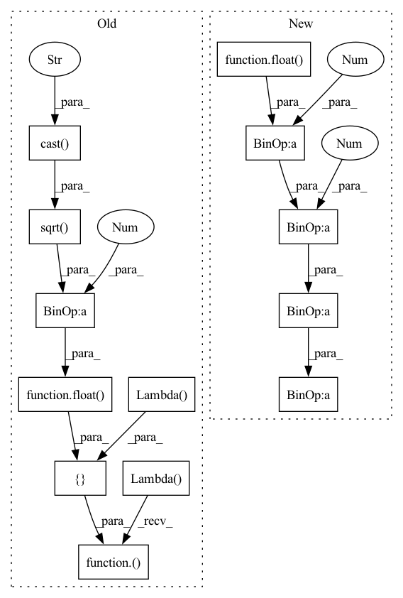

Pattern ID :36231

Before Change
key_dim = make_divisible(cc * key_dim, divisor=8) // num_heads // regard as key_dim_ratio
else:
key_dim = cc // num_heads // Default value
qk_scale = float(1.0 / tf.math.sqrt(tf.cast(key_dim, "float32")))
out_shape = cc if out_shape is None else out_shape
emb_dim = num_heads * key_dim
kv_kernel = block_size + halo_size * 2
if block_size % strides != 0:
strides = 1
avg_pool_down = True
else:
avg_pool_down = False
query_block = block_size // strides
query = conv2d_no_bias(inputs, emb_dim, kernel_size=1, strides=strides, name=name and name + "query_")
_, hh, ww, cc = query.shape
// print(f">>>> {inputs.shape = }, {query.shape = }, {block_size = }, {strides = }")
// attn_query = rearrange(query, "B (h hb) (w wb) (hd c) -> B hd h w (hb wb) c", hb=query_block, wb=query_block, hd=num_heads)
// pos_query = rearrange(attn_query, "B hd h w (hb wb) c -> B (hd h w) hb wb c", hb=query_block, wb=query_block)
hh_qq, ww_qq, cc_qq = hh // query_block, ww // query_block, cc // num_heads
query = tf.reshape(query, [-1, hh_qq, query_block, ww_qq, query_block, num_heads, cc_qq])
query = tf.transpose(query, [0, 5, 1, 3, 2, 4, 6]) // [batch, num_heads, hh, ww, query_block, query_block, key_dim]
// attn_query = [batch, num_heads, hh, ww, query_block * query_block, key_dim]
attn_query = tf.reshape(query, [-1, num_heads, hh_qq, ww_qq, query_block * query_block, cc_qq]) * qk_scale // [???] qk_scale NOT multiplied with pos_query
// pos_query = [batch, num_heads * hh * ww, query_block, query_block, key_dim]
pos_query = tf.reshape(query, [-1, num_heads * hh_qq * ww_qq, query_block, query_block, cc_qq])
// key_value = [batch, height, width, key_dim + out_shape]
key_value = conv2d_no_bias(inputs, emb_dim + out_shape, kernel_size=1, use_bias=False, name=name and name + "key_value_")
kv_padded = tf.pad(key_value, [[0, 0], [halo_size, halo_size], [halo_size, halo_size], [0, 0]])
sizes, strides = [1, kv_kernel, kv_kernel, 1], [1, block_size, block_size, 1]
// kv_inp = [batch, hh, ww, kv_kernel * kv_kernel * (key_dim + out_shape)]
// kv_inp = tf.image.extract_patches(kv_padded, sizes=sizes, strides=strides, rates=[1, 1, 1, 1], padding="VALID")
kv_inp = CompatibleExtractPatches(sizes=sizes, strides=strides, rates=[1, 1, 1, 1], padding="VALID")(kv_padded)
// kv_inp = rearrange(kv_inp, "B h w (hb wb hd c) -> B hd h w (hb wb) c", hb=kv_kernel, wb=kv_kernel, hd=num_heads)
_, hh_kk, ww_kk, cc = kv_inp.shape
cc_kk = cc // num_heads // kv_kernel // kv_kernel
kv_inp = tf.reshape(kv_inp, [-1, hh_kk, ww_kk, kv_kernel, kv_kernel, num_heads, cc_kk])
kv_inp = tf.transpose(kv_inp, [0, 5, 1, 2, 3, 4, 6])
kv_inp = tf.reshape(kv_inp, [-1, num_heads, hh_kk, ww_kk, kv_kernel * kv_kernel, cc_kk])
// key = [batch, num_heads, hh, ww, kv_kernel * kv_kernel, key_dim]
// value = [batch, num_heads, hh, ww, kv_kernel * kv_kernel, out_dim]
key, value = tf.split(kv_inp, [emb_dim // num_heads, out_shape // num_heads], axis=-1)
// scaled_dot_product_attention
// print(f">>>> {attn_query.shape = }, {key.shape = }, {value.shape = }, {kv_inp.shape = }, {pos_query.shape = }, {num_heads = }")
// attention_scores = [batch, num_heads, hh, ww, query_block * query_block, kv_kernel * kv_kernel]
attention_scores = keras.layers.Lambda(lambda xx: tf.matmul(xx[0], xx[1], transpose_b=True))([attn_query, key])
// pos = [batch, num_heads * hh * ww, query_block, query_block, kv_kernel, kv_kernel]
pos = RelativePositionalEmbedding(position_height=kv_kernel, name=name and name + "pos_emb")(pos_query)
// print(f">>>> {pos.shape = }, {attention_scores.shape = }")
pos = tf.reshape(pos, [-1, *attention_scores.shape[1:]])
attention_scores = keras.layers.Add()([attention_scores, pos])
// attention_scores = tf.nn.softmax(attention_scores, axis=-1)
attention_scores = keras.layers.Softmax(axis=-1, name=name and name + "attention_scores")(attention_scores)
if attn_dropout > 0:
attention_scores = keras.layers.Dropout(attn_dropout, name=name and name + "attn_drop")(attention_scores)
// attention_output = [batch, num_heads, hh, ww, query_block * query_block, out_dim]
attention_output = keras.layers.Lambda(lambda xx: tf.matmul(xx[0], xx[1]))([attention_scores, value])
// attention_output = rearrange(attention_output, "B hd h w (hb wb) c -> B (h hb) (w wb) (hd c)", hb=query_block, wb=query_block)
_, heads, hh_aa, ww_aa, patch, cc_aa = attention_output.shape
attention_output = tf.reshape(attention_output, [-1, heads, hh_aa, ww_aa, query_block, query_block, cc_aa])
attention_output = tf.transpose(attention_output, [0, 2, 4, 3, 5, 1, 6])
After Change
else:
key_dim = cc // num_heads // Default value
// qk_scale = float(1.0 / tf.math.sqrt(tf.cast(key_dim, "float32")))
qk_scale = 1.0 / (float(key_dim) ** 0.5)
out_shape = cc if out_shape is None else out_shape
emb_dim = num_heads * key_dim
kv_kernel = block_size + halo_size * 2
if block_size % strides != 0:
strides = 1
avg_pool_down = True
else:
avg_pool_down = False
query_block = block_size // strides
query = conv2d_no_bias(inputs, emb_dim, kernel_size=1, strides=strides, name=name and name + "query_")
_, hh, ww, cc = query.shape
// print(f">>>> {inputs.shape = }, {query.shape = }, {block_size = }, {strides = }")
// attn_query = rearrange(query, "B (h hb) (w wb) (hd c) -> B hd h w (hb wb) c", hb=query_block, wb=query_block, hd=num_heads)
// pos_query = rearrange(attn_query, "B hd h w (hb wb) c -> B (hd h w) hb wb c", hb=query_block, wb=query_block)
hh_qq, ww_qq, cc_qq = hh // query_block, ww // query_block, cc // num_heads
query = functional.reshape(query, [-1, hh_qq, query_block, ww_qq, query_block, num_heads, cc_qq])
query = functional.transpose(query, [0, 5, 1, 3, 2, 4, 6]) // [batch, num_heads, hh, ww, query_block, query_block, key_dim]
// attn_query = [batch, num_heads, hh, ww, query_block * query_block, key_dim]
attn_query = functional.reshape(query, [-1, num_heads, hh_qq, ww_qq, query_block * query_block, cc_qq]) * qk_scale // qk_scale NOT multiplied with pos_query
// pos_query = [batch, num_heads * hh * ww, query_block, query_block, key_dim]
pos_query = functional.reshape(query, [-1, num_heads * hh_qq * ww_qq, query_block, query_block, cc_qq])
// key_value = [batch, height, width, key_dim + out_shape]
key_value = conv2d_no_bias(inputs, emb_dim + out_shape, kernel_size=1, use_bias=False, name=name and name + "key_value_")
kv_padded = functional.pad(key_value, [[0, 0], [halo_size, halo_size], [halo_size, halo_size], [0, 0]])
sizes, strides = [1, kv_kernel, kv_kernel, 1], [1, block_size, block_size, 1]
// kv_inp = [batch, hh, ww, kv_kernel * kv_kernel * (key_dim + out_shape)]
// kv_inp = tf.image.extract_patches(kv_padded, sizes=sizes, strides=strides, rates=[1, 1, 1, 1], padding="VALID")
kv_inp = CompatibleExtractPatches(sizes=sizes, strides=strides, rates=[1, 1, 1, 1], padding="VALID")(kv_padded)
// kv_inp = rearrange(kv_inp, "B h w (hb wb hd c) -> B hd h w (hb wb) c", hb=kv_kernel, wb=kv_kernel, hd=num_heads)
_, hh_kk, ww_kk, cc = kv_inp.shape
cc_kk = cc // num_heads // kv_kernel // kv_kernel
kv_inp = functional.reshape(kv_inp, [-1, hh_kk, ww_kk, kv_kernel, kv_kernel, num_heads, cc_kk])
kv_inp = functional.transpose(kv_inp, [0, 5, 1, 2, 3, 4, 6])
kv_inp = functional.reshape(kv_inp, [-1, num_heads, hh_kk, ww_kk, kv_kernel * kv_kernel, cc_kk])
// key = [batch, num_heads, hh, ww, kv_kernel * kv_kernel, key_dim]
// value = [batch, num_heads, hh, ww, kv_kernel * kv_kernel, out_dim]
key, value = functional.split(kv_inp, [emb_dim // num_heads, out_shape // num_heads], axis=-1)
// scaled_dot_product_attention
// print(f">>>> {attn_query.shape = }, {key.shape = }, {value.shape = }, {kv_inp.shape = }, {pos_query.shape = }, {num_heads = }")
// attention_scores = [batch, num_heads, hh, ww, query_block * query_block, kv_kernel * kv_kernel]
// attention_scores = layers.Lambda(lambda xx: functional.matmul(xx[0], xx[1], transpose_b=True))([attn_query, key])
attention_scores = attn_query @ functional.transpose(key, [0, 1, 2, 3, 5, 4])
// pos = [batch, num_heads * hh * ww, query_block, query_block, kv_kernel, kv_kernel]
pos = RelativePositionalEmbedding(position_height=kv_kernel, name=name and name + "pos_emb")(pos_query)
// print(f">>>> {pos.shape = }, {attention_scores.shape = }")
pos = functional.reshape(pos, [-1, *attention_scores.shape[1:]])
attention_scores = layers.Add()([attention_scores, pos])
// attention_scores = tf.nn.softmax(attention_scores, axis=-1)
attention_scores = layers.Softmax(axis=-1, name=name and name + "attention_scores")(attention_scores)
if attn_dropout > 0:
attention_scores = layers.Dropout(attn_dropout, name=name and name + "attn_drop")(attention_scores)
// attention_output = [batch, num_heads, hh, ww, query_block * query_block, out_dim]
// attention_output = layers.Lambda(lambda xx: functional.matmul(xx[0], xx[1]))([attention_scores, value])
attention_output = attention_scores @ value
// attention_output = rearrange(attention_output, "B hd h w (hb wb) c -> B (h hb) (w wb) (hd c)", hb=query_block, wb=query_block)
_, heads, hh_aa, ww_aa, patch, cc_aa = attention_output.shape
attention_output = functional.reshape(attention_output, [-1, heads, hh_aa, ww_aa, query_block, query_block, cc_aa])
In pattern: SUPERPATTERN
Frequency: 3
Non-data size: 13
Instances
Fragment ID: 102666222
Project Name: leondgarse/keras_cv_attention_models
Commit Name: e05e233f369a1d58f912872b1581a80d15cacc3f
Time: 2023-02-07
Author: leondgarse@gmail.com
File Name: keras_cv_attention_models/halonet/halonet.py
M Class Name: AnonimousClass
N Class Name: AnonimousClass
M Method Name: halo_attention(11)
N Method Name: halo_attention(11)
M Parent Class:
N Parent Class:
M File Name: keras_cv_attention_models/halonet/halonet.py
N File Name: keras_cv_attention_models/halonet/halonet.py
M Start Line: 23
M End Line: 98
N Start Line: 28
N End Line: 106
'>
Before Change
):
input_channel = inputs.shape[-1]
key_dim = key_dim if key_dim > 0 else input_channel // num_heads
qk_scale = float(1.0 / tf.math.sqrt(tf.cast(key_dim, "float32")))
out_shape = input_channel if out_shape is None else out_shape
qk_out = num_heads * key_dim
value_out = attn_ratio * qk_out
value_dim = attn_ratio * key_dim
if strides > 1:
should_cut_height, should_cut_width = inputs.shape[1] % 2, inputs.shape[2] % 2 // keep shape same with inputs after later UpSampling2D
inputs = depthwise_conv2d_no_bias(inputs, use_bias=True, kernel_size=3, strides=strides, padding="same", name=name and name + "down_sample_")
inputs = batchnorm_with_activation(inputs, activation=None, name=name and name + "down_sample_")
kv_blocks = inputs.shape[1] * inputs.shape[2]
if use_local_global_query:
// pool_query = keras.layers.AvgPool2D(pool_size=1, strides=2)(inputs)
pool_query = inputs[:, ::2, ::2] // nn.AvgPool2d(kernel_size=1, stride=2, padding=0)
local_query = depthwise_conv2d_no_bias(inputs, use_bias=qkv_bias, kernel_size=3, strides=2, padding="same", name=name and name + "local_query_")
pre_query = pool_query + local_query
vv_local_strides = 2
else:
pre_query = inputs
vv_local_strides = 1
_, query_height, query_width, _ = pre_query.shape
query = conv2d_no_bias(pre_query, qk_out, use_bias=qkv_bias, kernel_size=1, name=name and name + "query_")
query = batchnorm_with_activation(query, activation=None, name=name and name + "query_")
key = conv2d_no_bias(inputs, qk_out, use_bias=qkv_bias, kernel_size=1, name=name and name + "key_")
key = batchnorm_with_activation(key, activation=None, name=name and name + "key_")
value = conv2d_no_bias(inputs, value_out, use_bias=qkv_bias, kernel_size=1, name=name and name + "value_")
value = batchnorm_with_activation(value, activation=None, name=name and name + "value_")
vv_local = depthwise_conv2d_no_bias(value, use_bias=qkv_bias, kernel_size=3, strides=vv_local_strides, padding="same", name=name and name + "value_local_")
vv_local = batchnorm_with_activation(vv_local, activation=None, name=name and name + "value_local_")
query = tf.transpose(tf.reshape(query, [-1, query_height * query_width, num_heads, key_dim]), [0, 2, 1, 3]) // [batch, num_heads, hh * ww, key_dim]
key = tf.transpose(tf.reshape(key, [-1, kv_blocks, num_heads, key_dim]), [0, 2, 3, 1]) // [batch, num_heads, key_dim, hh * ww]
value = tf.transpose(tf.reshape(value, [-1, kv_blocks, num_heads, value_dim]), [0, 2, 1, 3]) // [batch, num_heads, hh * ww, value_dim]
attention_scores = keras.layers.Lambda(lambda xx: tf.matmul(xx[0], xx[1]))([query, key]) * qk_scale // [batch, num_heads, hh * ww, hh * ww]
// print(f"{query.shape = }, {key.shape = }, {value.shape = }, {attention_scores.shape = }, {query_height = }")
attention_scores = MultiHeadPositionalEmbedding(query_height=query_height, name=name and name + "pos_emb")(attention_scores)
if use_talking_head:
attention_scores = tf.transpose(attention_scores, [0, 2, 3, 1]) // [batch, hh * ww, hh * ww, num_heads]
attention_scores = conv2d_no_bias(attention_scores, num_heads, use_bias=True, name=name and name + "talking_head_1_")
attention_scores = keras.layers.Softmax(axis=2, name=name and name + "attention_scores")(attention_scores) // On previous last dimension
attention_scores = conv2d_no_bias(attention_scores, num_heads, use_bias=True, name=name and name + "talking_head_2_")
// attention_scores = keras.layers.Dropout(attn_dropout, name=name and name + "attn_drop")(attention_scores) if attn_dropout > 0 else attention_scores
attention_scores = tf.transpose(attention_scores, [0, 3, 1, 2]) // [batch, num_heads, hh * ww, hh * ww]
else:
attention_scores = keras.layers.Softmax(axis=-1, name=name and name + "attention_scores")(attention_scores)
// attention_scores = keras.layers.Dropout(attn_dropout, name=name and name + "attn_drop")(attention_scores) if attn_dropout > 0 else attention_scores
// value = [batch, num_heads, hh * ww, value_dim], attention_output = [batch, num_heads, hh * ww, value_dim]
attention_output = keras.layers.Lambda(lambda xx: tf.matmul(xx[0], xx[1]))([attention_scores, value])
attention_output = tf.transpose(attention_output, perm=[0, 2, 1, 3])
attention_output = tf.reshape(attention_output, [-1, query_height, query_width, num_heads * value_dim])
attention_output += vv_local
// print(f">>>> {attention_output.shape = }, {attention_scores.shape = }")
After Change
input_channel = inputs.shape[-1]
key_dim = key_dim if key_dim > 0 else input_channel // num_heads
// qk_scale = float(1.0 / tf.math.sqrt(tf.cast(key_dim, "float32")))
qk_scale = 1.0 / (float(key_dim) ** 0.5)
out_shape = input_channel if out_shape is None else out_shape
qk_out = num_heads * key_dim
value_out = attn_ratio * qk_out
value_dim = attn_ratio * key_dim
if strides > 1:
should_cut_height, should_cut_width = inputs.shape[1] % 2, inputs.shape[2] % 2 // keep shape same with inputs after later UpSampling2D
inputs = depthwise_conv2d_no_bias(inputs, use_bias=True, kernel_size=3, strides=strides, padding="same", name=name and name + "down_sample_")
inputs = batchnorm_with_activation(inputs, activation=None, name=name and name + "down_sample_")
kv_blocks = inputs.shape[1] * inputs.shape[2]
if use_local_global_query:
// pool_query = layers.AvgPool2D(pool_size=1, strides=2)(inputs)
pool_query = inputs[:, ::2, ::2] // nn.AvgPool2d(kernel_size=1, stride=2, padding=0)
local_query = depthwise_conv2d_no_bias(inputs, use_bias=qkv_bias, kernel_size=3, strides=2, padding="same", name=name and name + "local_query_")
pre_query = pool_query + local_query
vv_local_strides = 2
else:
pre_query = inputs
vv_local_strides = 1
_, query_height, query_width, _ = pre_query.shape
query = conv2d_no_bias(pre_query, qk_out, use_bias=qkv_bias, kernel_size=1, name=name and name + "query_")
query = batchnorm_with_activation(query, activation=None, name=name and name + "query_")
key = conv2d_no_bias(inputs, qk_out, use_bias=qkv_bias, kernel_size=1, name=name and name + "key_")
key = batchnorm_with_activation(key, activation=None, name=name and name + "key_")
value = conv2d_no_bias(inputs, value_out, use_bias=qkv_bias, kernel_size=1, name=name and name + "value_")
value = batchnorm_with_activation(value, activation=None, name=name and name + "value_")
vv_local = depthwise_conv2d_no_bias(value, use_bias=qkv_bias, kernel_size=3, strides=vv_local_strides, padding="same", name=name and name + "value_local_")
vv_local = batchnorm_with_activation(vv_local, activation=None, name=name and name + "value_local_")
query = functional.transpose(
functional.reshape(query, [-1, query_height * query_width, num_heads, key_dim]), [0, 2, 1, 3]
) // [batch, num_heads, hh * ww, key_dim]
key = functional.transpose(functional.reshape(key, [-1, kv_blocks, num_heads, key_dim]), [0, 2, 3, 1]) // [batch, num_heads, key_dim, hh * ww]
value = functional.transpose(functional.reshape(value, [-1, kv_blocks, num_heads, value_dim]), [0, 2, 1, 3]) // [batch, num_heads, hh * ww, value_dim]
// attention_scores = layers.Lambda(lambda xx: functional.matmul(xx[0], xx[1]))([query, key]) * qk_scale // [batch, num_heads, hh * ww, hh * ww]
// print(f"{query.shape = }, {key.shape = }, {value.shape = }, {attention_scores.shape = }, {query_height = }")
attention_scores = (query @ key) * qk_scale
attention_scores = MultiHeadPositionalEmbedding(query_height=query_height, name=name and name + "pos_emb")(attention_scores)
if use_talking_head:
attention_scores = functional.transpose(attention_scores, [0, 2, 3, 1]) // [batch, hh * ww, hh * ww, num_heads]
attention_scores = conv2d_no_bias(attention_scores, num_heads, use_bias=True, name=name and name + "talking_head_1_")
attention_scores = layers.Softmax(axis=2, name=name and name + "attention_scores")(attention_scores) // On previous last dimension
attention_scores = conv2d_no_bias(attention_scores, num_heads, use_bias=True, name=name and name + "talking_head_2_")
// attention_scores = layers.Dropout(attn_dropout, name=name and name + "attn_drop")(attention_scores) if attn_dropout > 0 else attention_scores
attention_scores = functional.transpose(attention_scores, [0, 3, 1, 2]) // [batch, num_heads, hh * ww, hh * ww]
else:
attention_scores = layers.Softmax(axis=-1, name=name and name + "attention_scores")(attention_scores)
// attention_scores = layers.Dropout(attn_dropout, name=name and name + "attn_drop")(attention_scores) if attn_dropout > 0 else attention_scores
// value = [batch, num_heads, hh * ww, value_dim], attention_output = [batch, num_heads, hh * ww, value_dim]
// attention_output = layers.Lambda(lambda xx: functional.matmul(xx[0], xx[1]))([attention_scores, value])
attention_output = attention_scores @ value
attention_output = functional.transpose(attention_output, perm=[0, 2, 1, 3])
attention_output = functional.reshape(attention_output, [-1, query_height, query_width, num_heads * value_dim])
attention_output += vv_local
'>
Fragment ID: 102666223
Project Name: leondgarse/keras_cv_attention_models
Commit Name: e3784150a3d11fcb46093897dda15e06293789f5
Time: 2023-02-07
Author: leondgarse@gmail.com
File Name: keras_cv_attention_models/efficientformer/efficientformer_v2.py
M Class Name: AnonimousClass
N Class Name: AnonimousClass
M Method Name: conv_mhsa_with_multi_head_position(11)
N Method Name: conv_mhsa_with_multi_head_position(11)
M Parent Class:
N Parent Class:
M File Name: keras_cv_attention_models/efficientformer/efficientformer_v2.py
N File Name: keras_cv_attention_models/efficientformer/efficientformer_v2.py
M Start Line: 38
M End Line: 101
N Start Line: 38
N End Line: 106
'>
Before Change
):
_, hh, ww, cc = inputs.shape
key_dim = key_dim if key_dim > 0 else cc // num_heads
qk_scale = float(1.0 / tf.math.sqrt(tf.cast(key_dim, "float32")))
out_shape = cc if out_shape is None or not out_weight else out_shape
qkv_out = num_heads * key_dim
qkv = keras.layers.Dense(qkv_out * 3, use_bias=qkv_bias, name=name and name + "qkv")(inputs)
qkv = tf.reshape(qkv, [-1, qkv.shape[1] * qkv.shape[2], qkv.shape[-1]])
value, query, key = tf.split(qkv, 3, axis=-1) // Matching weights from PyTorch
query = tf.transpose(tf.reshape(query, [-1, query.shape[1], num_heads, key_dim]), [0, 2, 3, 1]) // [batch, num_heads, key_dim, hh * ww]
key = tf.transpose(tf.reshape(key, [-1, key.shape[1], num_heads, key_dim]), [0, 2, 1, 3]) // [batch, num_heads, hh * ww, key_dim]
value = tf.transpose(tf.reshape(value, [-1, value.shape[1], num_heads, key_dim]), [0, 2, 3, 1]) // [batch, num_heads, key_dim, hh * ww]
attention_scores = keras.layers.Lambda(lambda xx: tf.matmul(xx[0], xx[1]))([query, key]) * qk_scale // [batch, num_heads, key_dim, key_dim]
attention_scores = keras.layers.Softmax(axis=-1, name=name and name + "attention_scores")(attention_scores)
attention_scores = keras.layers.Dropout(attn_dropout, name=name and name + "attn_drop")(attention_scores) if attn_dropout > 0 else attention_scores
// value = [batch, num_heads, key_dim, hh * ww], attention_output = [batch, num_heads, key_dim, hh * ww]
attention_output = keras.layers.Lambda(lambda xx: tf.matmul(xx[0], xx[1]))([attention_scores, value])
attention_output = tf.transpose(attention_output, perm=[0, 3, 1, 2]) // [batch, hh * ww, num_heads, key_dim]
attention_output = tf.reshape(attention_output, [-1, inputs.shape[1], inputs.shape[2], num_heads * key_dim])
// print(f">>>> {attention_output.shape = }, {attention_scores.shape = }")
After Change
_, hh, ww, cc = inputs.shape
key_dim = key_dim if key_dim > 0 else cc // num_heads
// qk_scale = float(1.0 / tf.math.sqrt(tf.cast(key_dim, "float32")))
qk_scale = 1.0 / (float(key_dim) ** 0.5)
out_shape = cc if out_shape is None or not out_weight else out_shape
qkv_out = num_heads * key_dim
qkv = layers.Dense(qkv_out * 3, use_bias=qkv_bias, name=name and name + "qkv")(inputs)
qkv = functional.reshape(qkv, [-1, qkv.shape[1] * qkv.shape[2], qkv.shape[-1]])
value, query, key = functional.split(qkv, 3, axis=-1) // Matching weights from PyTorch
query = functional.transpose(functional.reshape(query, [-1, query.shape[1], num_heads, key_dim]), [0, 2, 3, 1]) // [batch, num_heads, key_dim, hh * ww]
key = functional.transpose(functional.reshape(key, [-1, key.shape[1], num_heads, key_dim]), [0, 2, 1, 3]) // [batch, num_heads, hh * ww, key_dim]
value = functional.transpose(functional.reshape(value, [-1, value.shape[1], num_heads, key_dim]), [0, 2, 3, 1]) // [batch, num_heads, key_dim, hh * ww]
// attention_scores = layers.Lambda(lambda xx: functional.matmul(xx[0], xx[1]))([query, key]) * qk_scale // [batch, num_heads, key_dim, key_dim]
attention_scores = (query @ key) * qk_scale
attention_scores = layers.Softmax(axis=-1, name=name and name + "attention_scores")(attention_scores)
attention_scores = layers.Dropout(attn_dropout, name=name and name + "attn_drop")(attention_scores) if attn_dropout > 0 else attention_scores
// value = [batch, num_heads, key_dim, hh * ww], attention_output = [batch, num_heads, key_dim, hh * ww]
// attention_output = layers.Lambda(lambda xx: functional.matmul(xx[0], xx[1]))([attention_scores, value])
attention_output = attention_scores @ value
attention_output = functional.transpose(attention_output, perm=[0, 3, 1, 2]) // [batch, hh * ww, num_heads, key_dim]
attention_output = functional.reshape(attention_output, [-1, inputs.shape[1], inputs.shape[2], num_heads * key_dim])
// print(f">>>> {attention_output.shape = }, {attention_scores.shape = }")
'>
Fragment ID: 102666221
Project Name: leondgarse/keras_cv_attention_models
Commit Name: 3e9ba29ee6ea38d6190199b74812538fc0614c47
Time: 2023-02-08
Author: leondgarse@gmail.com
File Name: keras_cv_attention_models/davit/davit.py
M Class Name: AnonimousClass
N Class Name: AnonimousClass
M Method Name: multi_head_self_attention_channel(10)
N Method Name: multi_head_self_attention_channel(10)
M Parent Class:
N Parent Class:
M File Name: keras_cv_attention_models/davit/davit.py
N File Name: keras_cv_attention_models/davit/davit.py
M Start Line: 27
M End Line: 52
N Start Line: 30
N End Line: 58